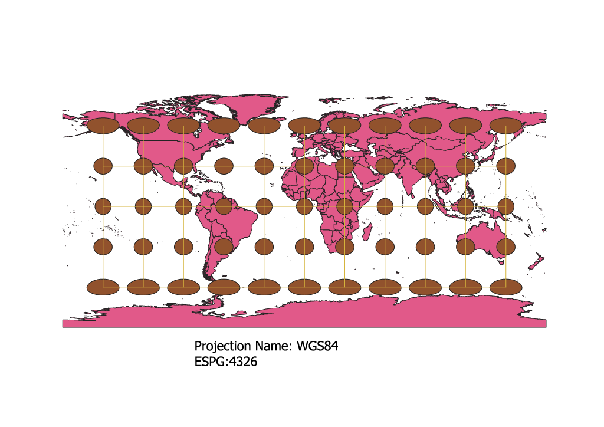
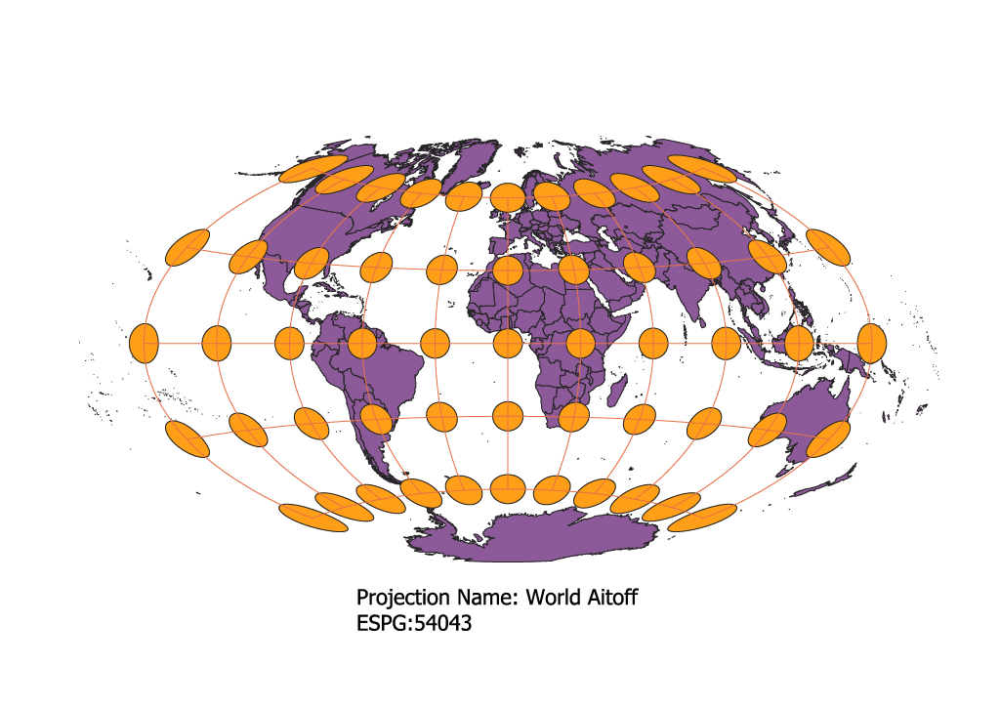
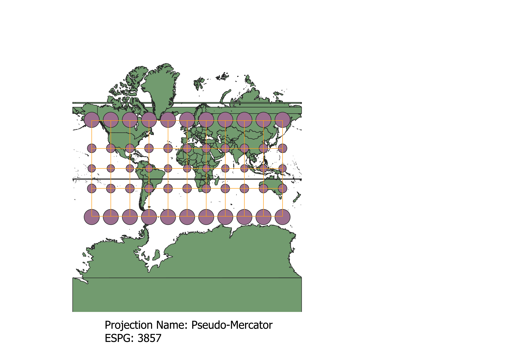
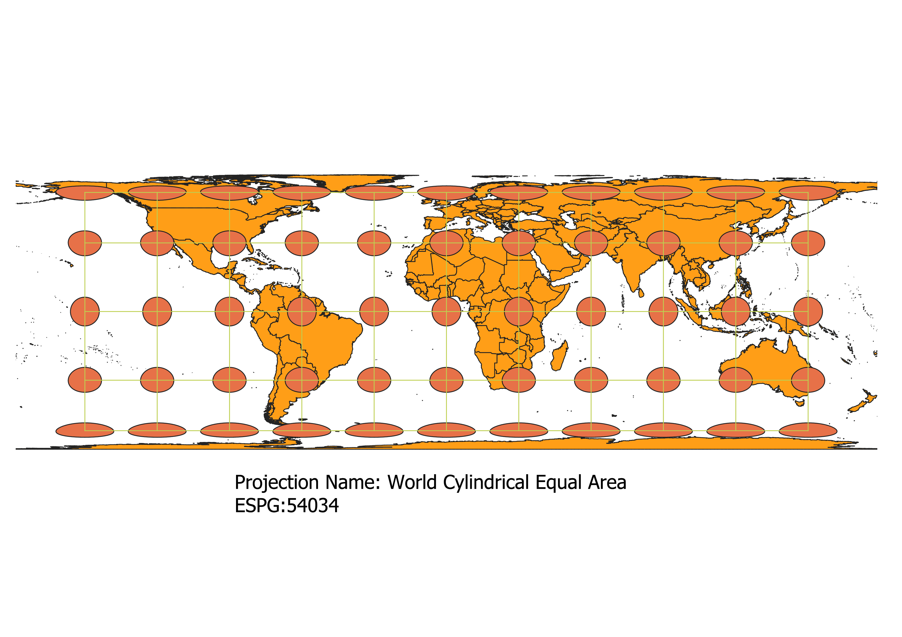
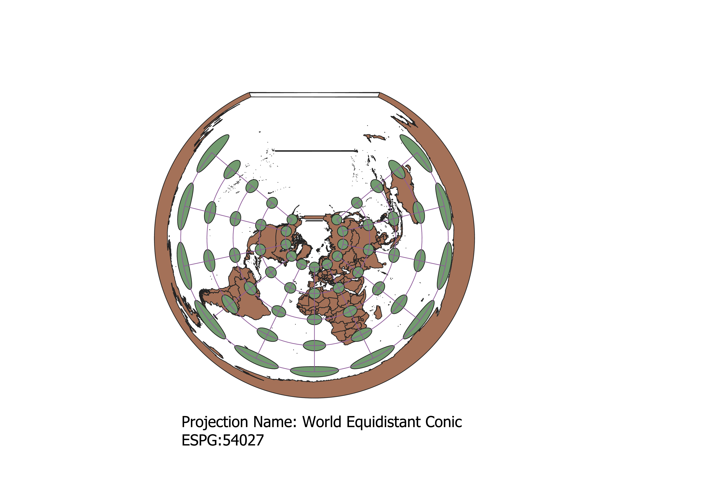
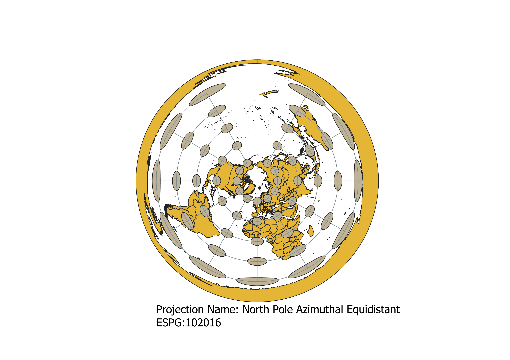
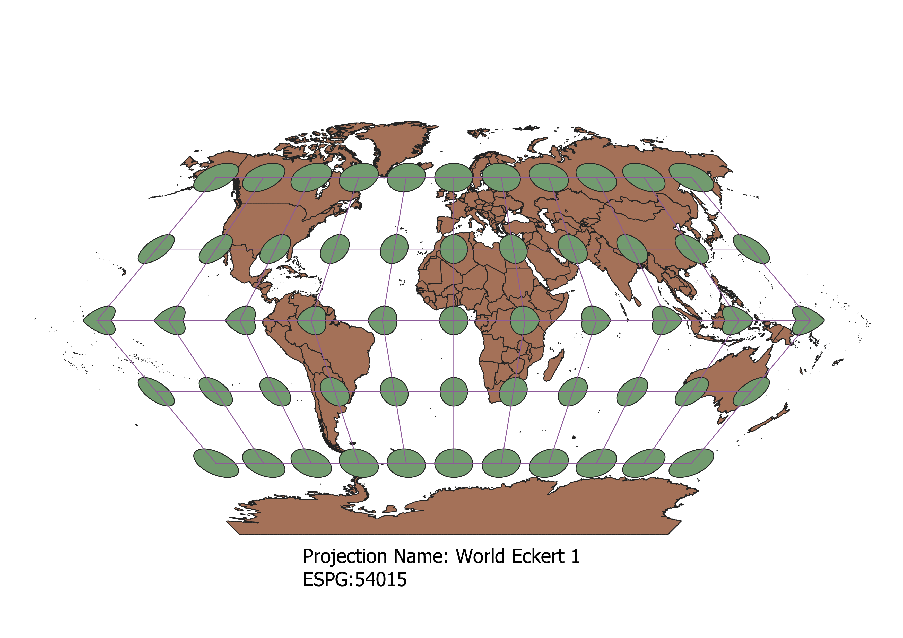

Hello! In this project I awesomely learned how to display images in different projections.
In my own words, this is how I displayed the map in different projections:
Utilizing the data from "naturalearthdata", I created a map image of the entire world. The default was set to WGS84 projection, and in order to change this, one must access the "Current CRS" tab in the bottom righthand corner. From there, I was able to search for the proper projection based off of its name within the menu that appeared once one selects the "current CRS" tab. An immense amount of projections are available, so searching for one's desired projection can seem overwhelming, but utilizing the search bar will alleviate that stress. Additionally, playing around with different projections may allow an individual to find the perfect projection that best suits their map!
WGS84 Projection
One can see that the indicator circles are consistent except when near each of the poles, as their surface areas drastically change from their counterparts. One can see how big Antartica is in compariston to Australia to understand this phenomenon.

World Aitoff Projection
This projection is quite interesting, as both the indicator circles and graticules take on a complexing shape. Both entities actually curve if one moves in any direction from the center. This showcases the sort of curvy sphere shape that planet Earth has. The indicator circles change in both surface area and shape.

Pseudo-Mercator Projection
Based on this projection, one can really see the size disparities of the individual contintents. The indicator circles remain the same shape, but gain surface area as one moves North/South to the respective poles. It's interesting to note size differences when comparing countries closer to the center of the map versus the poles.

Sphere Winkle I Projection
This projection is somewhat similar to the World Aitoff projection, as the graticules curve in sort of the same manner. The Winkel's indicator circles are different, though, as they don't lose as much of their circular shape in comparison to the Aitoff circles. The map looks a bit more flat and less curved because of this.

World Cylindrical Equal Area Projection
Personally, I really like this projection. As one can see, the indicator circles seem to be compressed the further one moves North or South. This means that the surface area is staying the same for each indicator circle, but their outward appearance is changing. As the indicator circles become compressed, it also seems as if the land on the top and bottom of the map also does the same. The graticules remained unchanged in this projection.

World Equidistant Conic Projection
I also really like this projection! As one can see, it's more of a top down view of the world than a face on view as we've previously been looking at. The graticules wrap in a sort of circle like shape around the map, and the indictor circles are small in the center, and stretched out as one moves outwards. This is why the USA may look small compared to other landforms because of its center placement on the map.

North Pole Azimuthal Equidistant Projection
This projection is similar to our last projection in the sense that it's sort of this top down view. Although similar, the biggest differences is the orientation of the indictator circles and graticules, as each entity seems to enclose more of the perimiter of the map than the previous one. As the circles sprawl outwards, they also seem to be longer and more oval shape than the previous projection. Continents like Africa and South America also seem to be bigger because of this phenomenon.

World Eckert I
I chose this projection to do on my own because I thought it was very unique the way the indicator circles were created. It almost seems as if someone is pinching them to the East/West in order to change their shape. It sort of makes the map longer and more curved the further outside one goes. One can see this as it looks like the entire continent of Australia is being stretched to the right. The graticules also take on a more pointed intersection in certain areas as opposed to curving. The indicator circles closest to their respective poles also seem to stretch the further one goes East or West.

Sphere Behrmann Projection
This was also one of my chosen projections. I chose it because I liked how the center indicator circles seemed to be stretched upwards, and as one moves North/South, they seem to compress themselves. The biggest continents of this projection seem to be in the middle, hence the size of Africa in comparison to Canada.
Data used for this project. I hope you enjoyed my projection journey :)
Download Natrual Earth 1:10m Cultural Vector